← WebView & Angular support analysis · TalkBack vs capture · VoiceOver vs capture
Angular Rule Lab, one section per rule page, with only the elements that rule is about. For each element: 1 what real TalkBack announced (Xiaomi, Android 14, screen recording; focus ring tracked, reviewed), 2 what real VoiceOver announced (iPad, screen recording, reviewed), 3 the spoken description our Android TalkBack capture holds for the element, and 4 the spoken caption our iOS dylib capture (DOM-layer POC) holds. The number in the first column is the box on both screenshots. ✓ the capture says exactly what the real screen reader said, ≈ same name with different wording, ≠ different. TalkBack's list / pager context ("In list, 3 items", "1 of 2") is not part of an element and is left out. Columns 1 and 2 are the screen readers' own captions read from the recordings and reviewed; a few small OCR slips may remain ("Рaу", "999" for ₹3,999), so a ≠ there is not always a capture difference.
Only the buttons, checkboxs, text fields, links, radio buttons, switchs, tabs on this page.
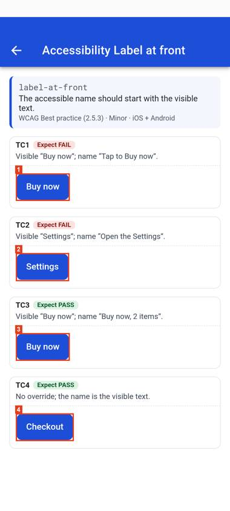
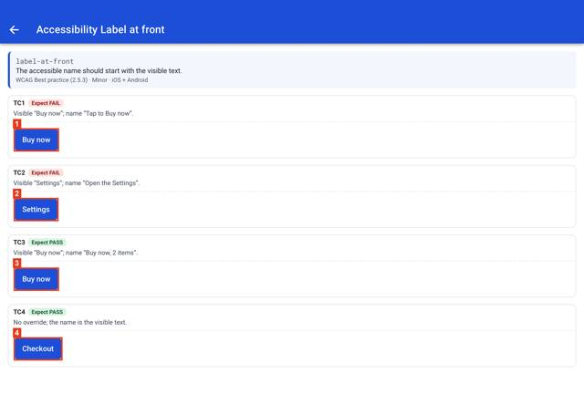
| # | TC | 1 · Real TalkBack | 2 · Real VoiceOver | 3 · Our Android capture | 4 · Our iOS capture |
|---|---|---|---|---|---|
| 1 | TC1 FAILbutton | Tap to Buy now, Button | Tap to Buy now, Button | Tap to Buy now, Button ✓class Button | Tap to Buy now, Button ✓type WebButton |
| 2 | TC2 FAILbutton | Open the Settings, Button | Open the Settings, Button | Open the Settings, Button ✓class Button | Open the Settings, Button ✓type WebButton |
| 3 | TC3 PASSbutton | Buy now, 2 items, Button | Buy now, 2 items, Button | Buy now, 2 items, Button ✓class Button | Buy now, 2 items, Button ✓type WebButton |
| 4 | TC4 PASSbutton | Checkout, Button | Checkout, Button | Checkout, Button ✓class Button | Checkout, Button ✓type WebButton |
Only the text fields on this page (1 other elements left out).
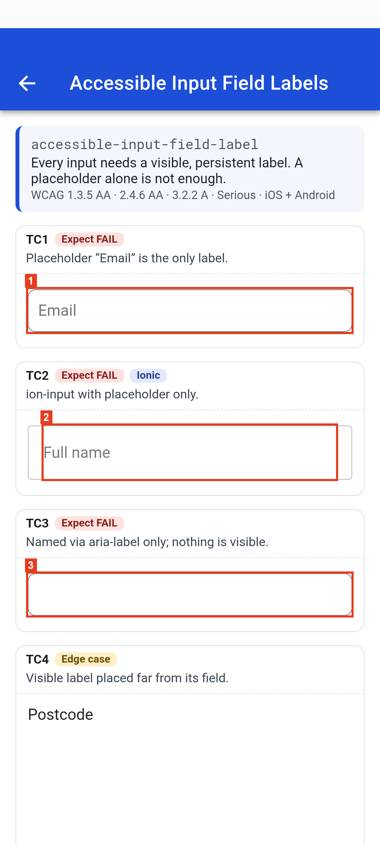
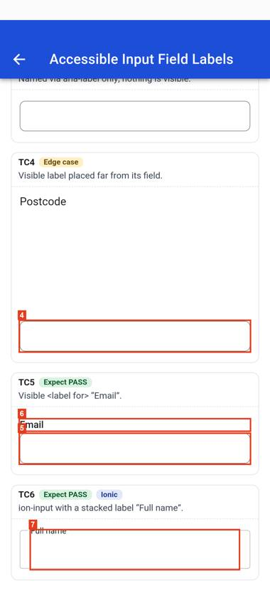
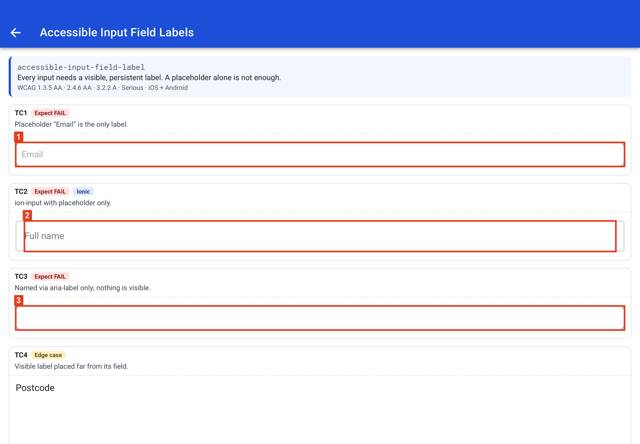
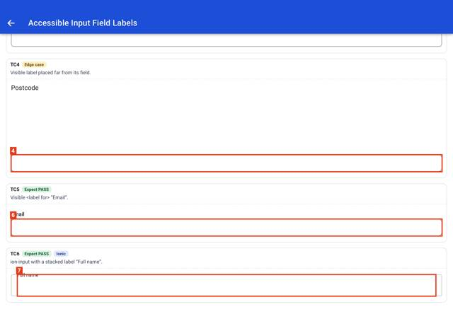
| # | TC | 1 · Real TalkBack | 2 · Real VoiceOver | 3 · Our Android capture | 4 · Our iOS capture |
|---|---|---|---|---|---|
| 1 | TC1 FAILtext field | Edit box | Email, Text field | Edit box ✓class EditText | Email, Text field ✓type TextField |
| 2 | TC2 FAILtext field | Full name, Edit box | Full name, Text field | Full name, Edit box ✓class EditText | Full name, Text field ✓type TextField |
| 3 | TC3 FAILtext field | Edit boxinferred: focused too briefly to speak | City, Text field | Edit box ✓class EditText | City, Text field ✓type TextField |
| 4 | TC4 EDGEtext field | Edit box | Postcode, Text field | Edit box ✓class EditText | Postcode, Text field ✓type TextField |
| 5 | TC5 PASStext field | Edit box | not reached in the recording | Edit box ✓class EditText | no captured node |
| 6 | TC5 PASStext field | Email, Text field | Email ✓class View | Email, Text field ✓type TextField | |
| 7 | TC6 PASStext field | · Edit box | Full name, Text field | Edit box ✓class EditText | Full name, Text field ✓type TextField |
Only the buttons, checkboxs, text fields, links, radio buttons, switchs, tabs on this page.
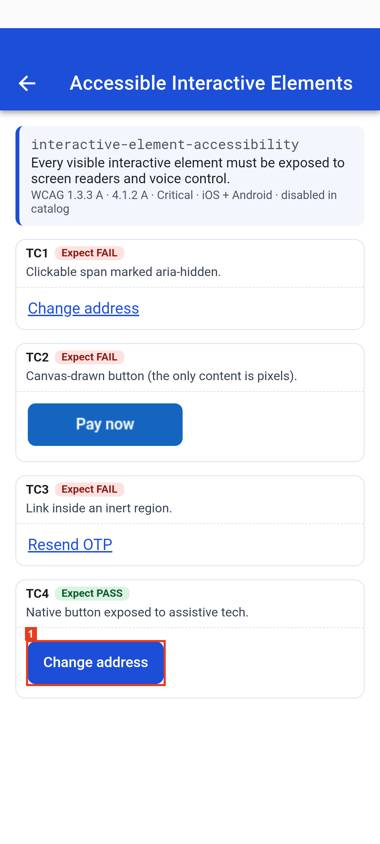
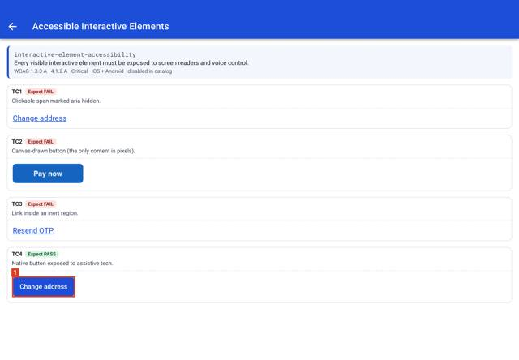
| # | TC | 1 · Real TalkBack | 2 · Real VoiceOver | 3 · Our Android capture | 4 · Our iOS capture |
|---|---|---|---|---|---|
| 1 | TC4 PASSbutton | Change address, Button | Change address, Button | Change address, Button ✓class Button | Change address, Button ✓type WebButton |
Every test-case element on this page.
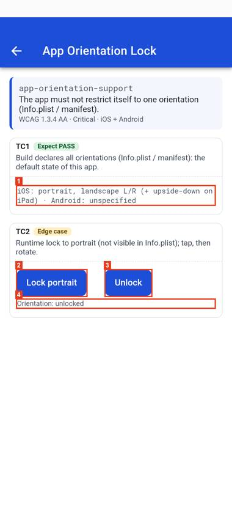
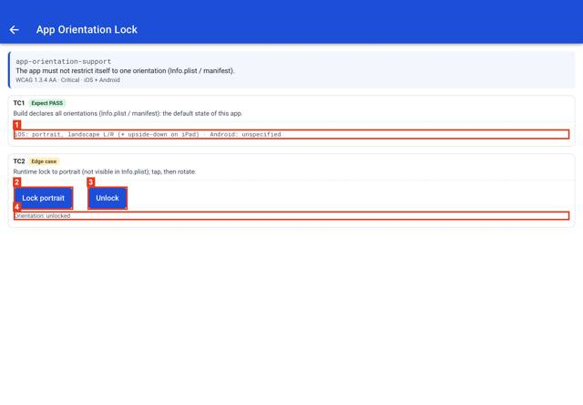
| # | TC | 1 · Real TalkBack | 2 · Real VoiceOver | 3 · Our Android capture | 4 · Our iOS capture |
|---|---|---|---|---|---|
| 1 | TC1 PASStext | iOS: portrait, landscape L/R (+ upside-down on iPad) · Android: unspecified | iOS: portrait,, landscape L/R (+ upside-down on iPad) · Android: unspecified | iOS: portrait, landscape L/R (+ upside-down on iPad) · Android: unspecified ✓class TextView | iOS: portrait, landscape L/R (+ upside-down on iPad) · Android: unspecified ✓type WebLabel |
| 2 | TC2 EDGEbutton | Lock portrait, Button | Lock portrait, Button | Lock portrait, Button ✓class Button | Lock portrait, Button ✓type WebButton |
| 3 | TC2 EDGEbutton | Unlock, Button | Unlock, Button | Unlock, Button ✓class Button | Unlock, Button ✓type WebButton |
| 4 | TC2 EDGEtext | Orientation: unlocked | not reached in the recording | Orientation: unlocked ✓class TextView | Orientation: unlockedtype WebLabel |
Only the buttons on this page.
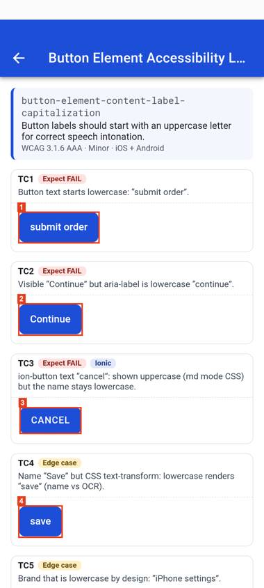
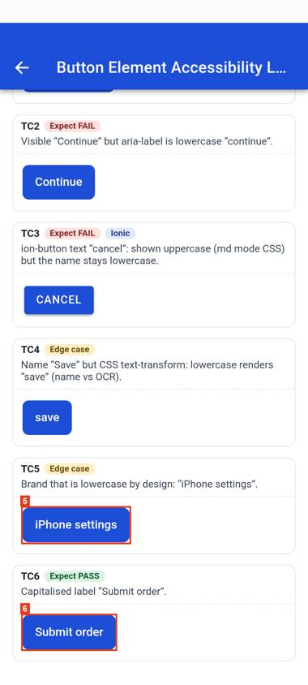
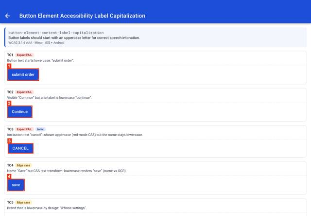
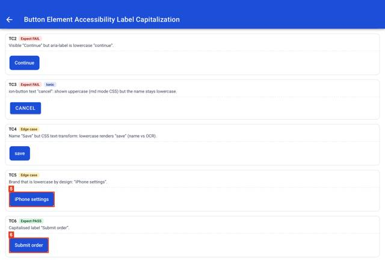
| # | TC | 1 · Real TalkBack | 2 · Real VoiceOver | 3 · Our Android capture | 4 · Our iOS capture |
|---|---|---|---|---|---|
| 1 | TC1 FAILbutton | submit order, Button | submit order, Button | submit order, Button ✓class Button | submit order, Button ✓type WebButton |
| 2 | TC2 FAILbutton | continue, Button | continue, Button | continue, Button ✓class Button | continue, Button ✓type WebButton |
| 3 | TC3 FAILbutton | CANCEL, Button | CANCEL, Button | CANCEL, Button ✓class Button | cancel, Button ✓type WebButton |
| 4 | TC4 EDGEbutton | save, Button | save, Button | save, Button ✓class Button | Save, Button ✓type WebButton |
| 5 | TC5 EDGEbutton | iPhone settings, Button | iPhone settings, Button | iPhone settings, Button ✓class Button | iPhone settings, Button ✓type WebButton |
| 6 | TC6 PASSbutton | not reached in the recording | Submit order, Button | Submit order, Buttonclass Button | Submit order, Button ✓type WebButton |
Only the checkboxs on this page (1 other elements left out).
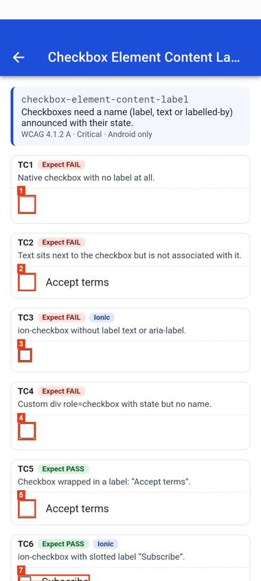
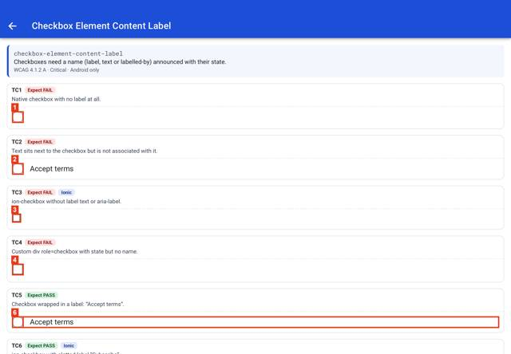
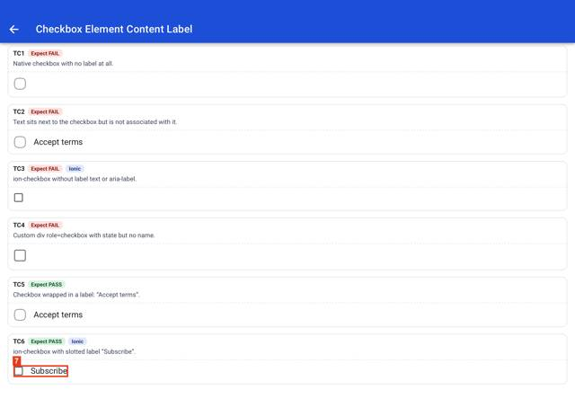
| # | TC | 1 · Real TalkBack | 2 · Real VoiceOver | 3 · Our Android capture | 4 · Our iOS capture |
|---|---|---|---|---|---|
| 1 | TC1 FAILcheckbox | Tick box | Checkbox, unticked | Tick box ✓class CheckBox | Checkbox ≠type WebCheckBox |
| 2 | TC2 FAILcheckbox | Tickbox | Checkbox, unticked | Tick box ✓class CheckBox | Checkbox ≠type WebCheckBox |
| 3 | TC3 FAILcheckbox | Tick box | Checkbox, unticked | Tick box ✓class CheckBox | Checkbox ≠type WebCheckBox |
| 4 | TC4 FAILcheckbox | Tick box | Checkbox, unticked | Tick box ✓class CheckBox | Checkbox ≠type WebCheckBox |
| 5 | TC5 PASScheckbox | Tick box | Accept terms, Checkbox, unticked | Tick box ✓class CheckBox | Accept terms, Checkbox ≈type WebCheckBox |
| 6 | TC5 PASScheckbox | not reached in the recording | Accept terms, Checkbox, unticked | no captured node | Accept terms ≈type WebLabel |
| 7 | TC6 PASScheckbox | not reached in the recording | Subscribe, Checkbox, unticked | Subscribe, Tick boxclass CheckBox | Subscribe, Checkbox ≈type WebCheckBox |
Only the buttons, checkboxs, text fields, links, radio buttons, switchs, tabs on this page (8 other elements left out).
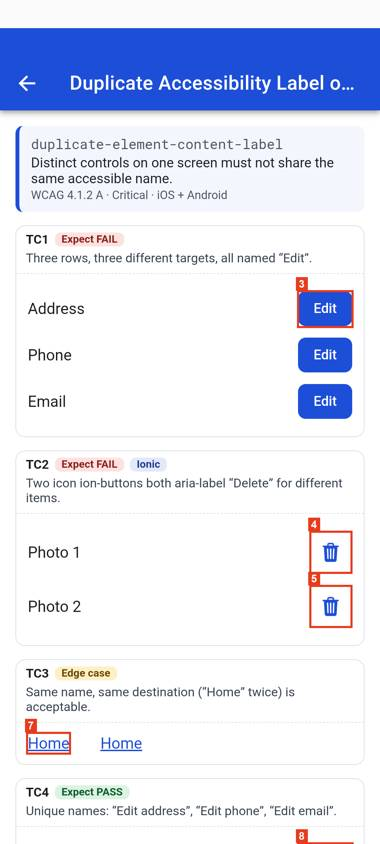
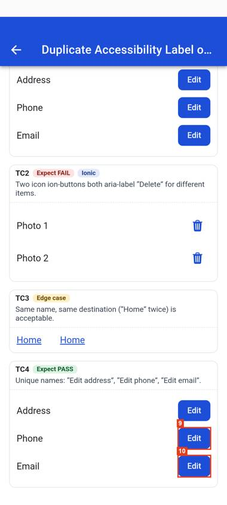
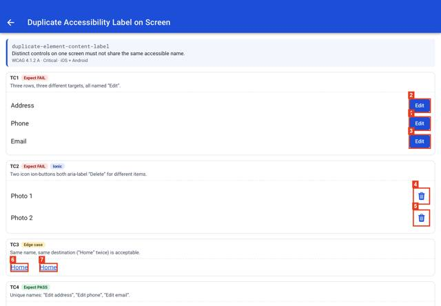
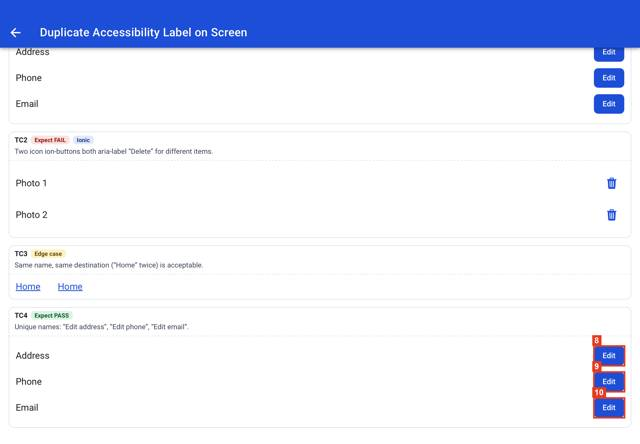
| # | TC | 1 · Real TalkBack | 2 · Real VoiceOver | 3 · Our Android capture | 4 · Our iOS capture |
|---|---|---|---|---|---|
| 1 | TC1 FAILbutton | Edit, Button | Edit, Button | Edit, Button ✓class Button | Edit, Button ✓type WebButton |
| 2 | TC1 FAILbutton | not reached in the recording | Edit, Button | Edit, Buttonclass Button | Edit, Button ✓type WebButton |
| 3 | TC1 FAILbutton | not reached in the recording | Edit, Button | Edit, Buttonclass Button | Edit, Button ✓type WebButton |
| 4 | TC2 FAILbutton | Delete, Button | Delete, Button | Delete, Button ✓class Button | Delete, Button ✓type WebButton |
| 5 | TC2 FAILbutton | Delete, Buttoninferred: focused too briefly to speak | Delete, Button | Delete, Button ✓class Button | Delete, Button ✓type WebButton |
| 6 | TC3 EDGElink | Home, link | Home, Link | Home, link ✓class View | Home, Link ✓type WebLink |
| 7 | TC3 EDGElink | not reached in the recording | Home, Link | Home, linkclass View | Home, Link ✓type WebLink |
| 8 | TC4 PASSbutton | Edit address, Button | Edit address, Button | Edit address, Button ✓class Button | Edit address, Button ✓type WebButton |
| 9 | TC4 PASSbutton | Edit phone, Button | Edit phone, Button | Edit phone, Button ✓class Button | Edit phone, Button ✓type WebButton |
| 10 | TC4 PASSbutton | Edit email, Button | Edit email, Button | Edit email, Button ✓class Button | Edit email, Button ✓type WebButton |
Only the buttons, checkboxs, text fields, links, radio buttons, switchs, tabs on this page (1 other elements left out).
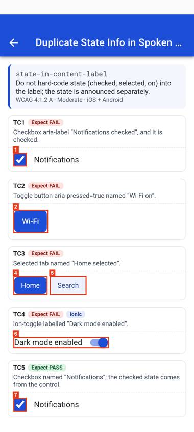
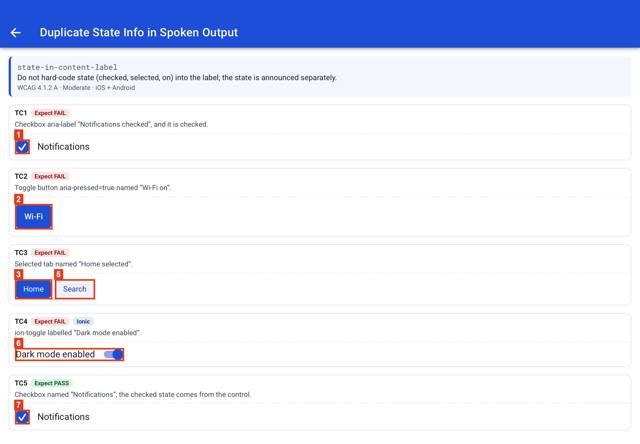
| # | TC | 1 · Real TalkBack | 2 · Real VoiceOver | 3 · Our Android capture | 4 · Our iOS capture |
|---|---|---|---|---|---|
| 1 | TC1 FAILcheckbox | ticked, Notifications checked, Tick box | Notifications checked, Checkbox, ticked | ticked, Notifications checked, Tick box ✓class CheckBox | Selected, Notifications checked, Checkbox ≈type WebCheckBox |
| 2 | TC2 FAILswitch | ticked, Wi-Fi, Switch | Wi-Fi on, Toggle button, Pressed | ticked, Wi-Fi, Switch ✓class ToggleButton | Selected, Wi-Fi on, Button ≈type WebButton |
| 3 | TC3 FAILtab | selected, Home selected, tab, 1 of 2, In tab list, 2 items | selected, Home selected, Tab | selected, Home selected, tab ≈class View | Selected, Home selected, Button, Tab ≈type WebTabButton |
| 4 | TC3 FAILtab | selected, Home selected, tabinferred: focused too briefly to speak | not reached in the recording | selected, Home selected, tab ✓class View | no captured node |
| 5 | TC3 FAILtab | Search, tab, 2 of 2 | Search, Tab | Search, tab ≈class View | Search, Button, Tab ≈type WebTabButton |
| 6 | TC4 FAILswitch | On, Dark mode enabled, Switch | Dark mode enabled, Switch button, on | ticked, Dark mode enabled, Switch ≈class Switch | Selected, Dark mode enabled, Switch button ≈type WebSwitch |
| 7 | TC5 PASScheckbox | ticked, Tick box | Notifications, Checkbox, ticked | ticked, Tick box ✓class CheckBox | Selected, Notifications, Checkbox ≈type WebCheckBox |
Only the buttons, checkboxs, text fields, images, links, radio buttons, switchs, tabs on this page.
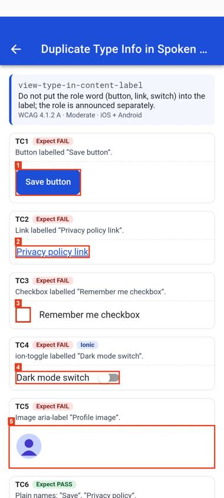
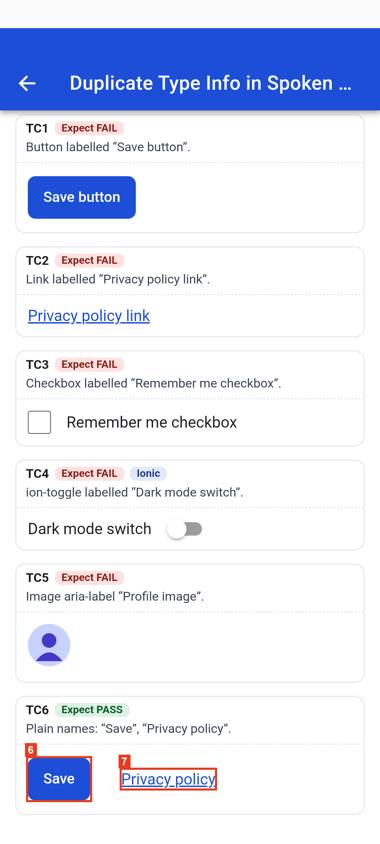
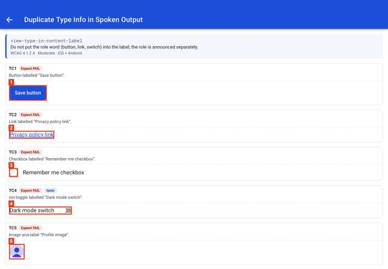
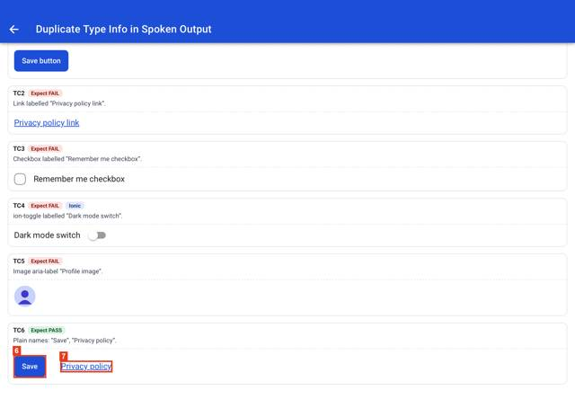
| # | TC | 1 · Real TalkBack | 2 · Real VoiceOver | 3 · Our Android capture | 4 · Our iOS capture |
|---|---|---|---|---|---|
| 1 | TC1 FAILbutton | Save button, Button | Save, Button | Save button, Button ✓class Button | Save button, Button ≈type WebButton |
| 2 | TC2 FAILlink | Privacy policy link, link | Privacy policy link, Link | Privacy policy link, link ✓class View | Privacy policy link, Link ✓type WebLink |
| 3 | TC3 FAILcheckbox | Tick box | Remember me checkbox, Checkbox, unticked | Tick box ✓class CheckBox | Remember me checkbox, Checkbox ≈type WebCheckBox |
| 4 | TC4 FAILswitch | Off, Dark mode switch, Switch | Dark mode switch, Switch button, off | Dark mode switch, Switch ≈class Switch | Dark mode switch, Switch button ≈type WebSwitch |
| 5 | TC5 FAILimage | Profile image, Image | Profile, Image | Profile image, Image ✓class View | Profile image, Image ≈type WebImageView |
| 6 | TC6 PASSbutton | Save, Button | Save, Button | Save, Button ✓class Button | Save, Button ✓type WebButton |
| 7 | TC6 PASSlink | not reached in the recording | Privacy policy, Link | Privacy policy, linkclass View | Privacy policy, Link ✓type WebLink |
Only the text fields on this page (1 other elements left out).
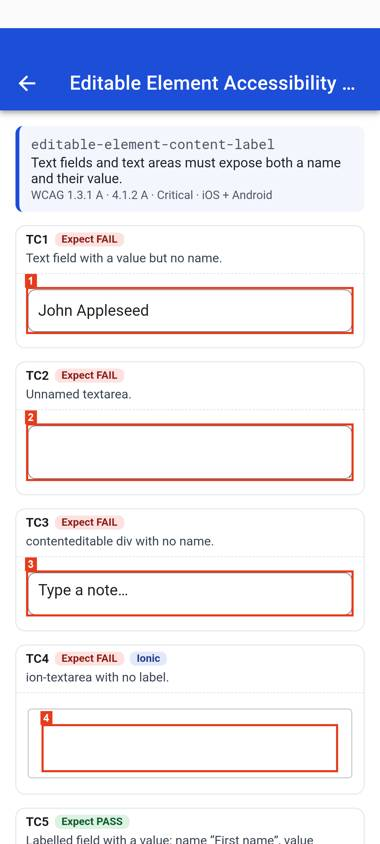
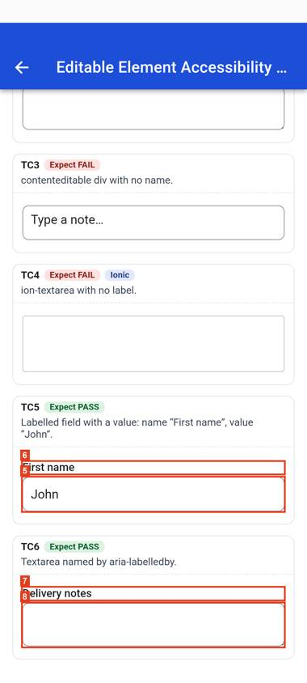
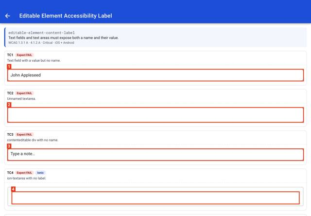
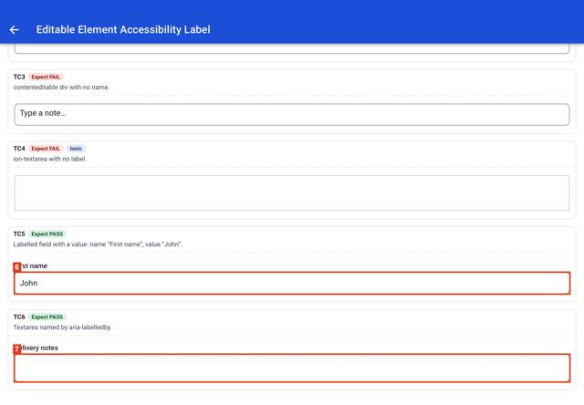
| # | TC | 1 · Real TalkBack | 2 · Real VoiceOver | 3 · Our Android capture | 4 · Our iOS capture |
|---|---|---|---|---|---|
| 1 | TC1 FAILtext field | John Appleseed, Edit box | John Appleseed, Text field | John Appleseed, Edit box ✓class EditText | Text field ≠type TextField |
| 2 | TC2 FAILtext field | Edit box | Multi-line text field | Edit box ✓class EditText | Text field ≠type UITextView |
| 3 | TC3 FAILtext field | Type a note..., Edit box | Type a note..., Multi-line text field | Type a note..., Edit box ✓class EditText | Text field ≠type UITextView |
| 4 | TC4 FAILtext field | Edit box | Multi-line text field | Edit box ✓class EditText | Text field ≠type UITextView |
| 5 | TC4 FAILtext field | John, Edit box | not reached in the recording | John, Edit box ✓class EditText | no captured node |
| 6 | TC5 PASStext field | not reached in the recording | First name, John, Text field | First nameclass View | First name, Text field ≈type TextField |
| 7 | TC6 PASStext field | Delivery notes | Delivery notes, Multi-line text field | Delivery notes ✓class TextView | Delivery notes, Text field ≈type UITextView |
| 8 | TC6 PASStext field | Edit box | not reached in the recording | Edit box ✓class EditText | no captured node |
Only the text fields on this page.
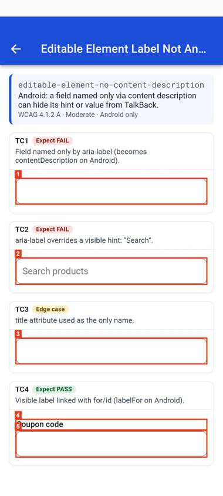
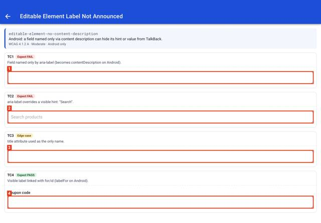
| # | TC | 1 · Real TalkBack | 2 · Real VoiceOver | 3 · Our Android capture | 4 · Our iOS capture |
|---|---|---|---|---|---|
| 1 | TC1 FAILtext field | Edit box | Coupon code, Text field | Edit box ✓class EditText | Coupon code, Text field ✓type TextField |
| 2 | TC2 FAILtext field | Search products, search text field | Search, Search products, Search field | Search products, search text field ✓class EditText | Search, Search field ≈type SearchField |
| 3 | TC3 EDGEtext field | Edit box | Referral code, Text field | Edit box ✓class EditText | Referral code, Text field ✓type TextField |
| 4 | TC4 PASStext field | Coupon code | Coupon code, Text field | Coupon code ✓class View | Coupon code, Text field ✓type TextField |
| 5 | TC4 PASStext field | Edit box | not reached in the recording | Edit box ✓class EditText | no captured node |
Every test-case element on this page.
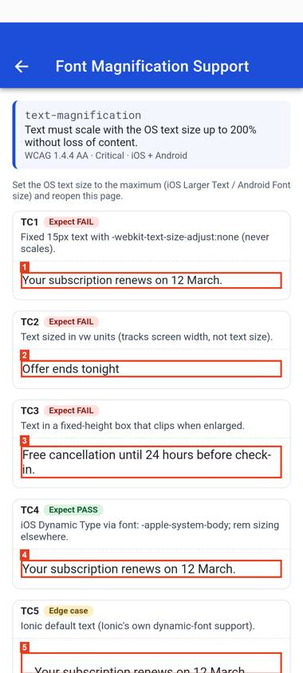
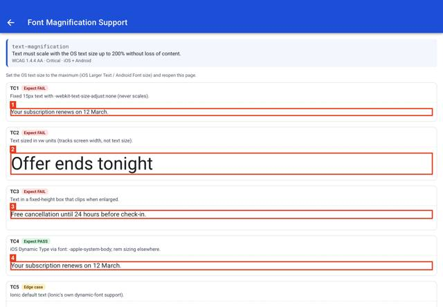
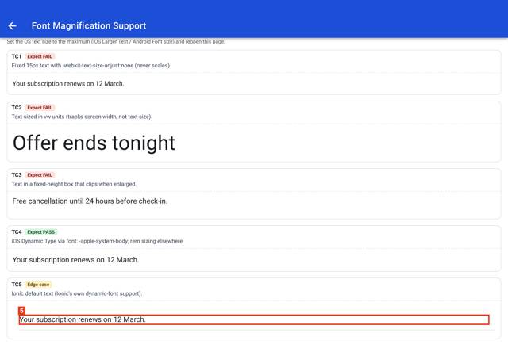
| # | TC | 1 · Real TalkBack | 2 · Real VoiceOver | 3 · Our Android capture | 4 · Our iOS capture |
|---|---|---|---|---|---|
| 1 | TC1 FAILtext | Your subscription renews on 12 March. | Your subscription renews on 12 March. | Your subscription renews on 12 March. ✓class TextView | Your subscription renews on 12 March. ✓type WebLabel |
| 2 | TC2 FAILtext | Offer ends tonight | Offer ends tonight | Offer ends tonight ✓class TextView | Offer ends tonight ✓type WebLabel |
| 3 | TC3 FAILtext | Free cancellation until 24 hours before check-in. | Free cancellation until 24 hours before check-in. | Free cancellation until 24 hours before check-in. ✓class TextView | Free cancellation until 24 hours before check-in. ✓type WebLabel |
| 4 | TC4 PASStext | Your subscription renews on 12 March. | Your subscription renews on 12 March. | Your subscription renews on 12 March. ✓class TextView | Your subscription renews on 12 March. ✓type WebLabel |
| 5 | TC5 EDGEtext | not reached in the recording | Your subscription renews on 12 March. | Your subscription renews on 12 March.class View | Your subscription renews on 12 March. ✓type WebLabel |
Only the images on this page (2 other elements left out).
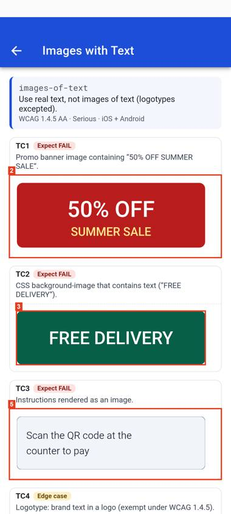
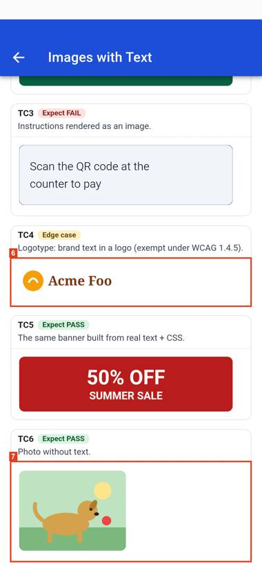
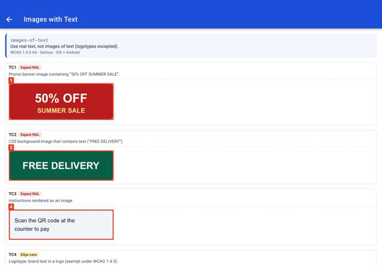
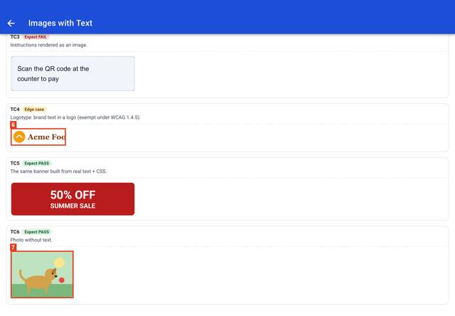
| # | TC | 1 · Real TalkBack | 2 · Real VoiceOver | 3 · Our Android capture | 4 · Our iOS capture |
|---|---|---|---|---|---|
| 1 | TC1 FAILimage | 50% off summer sale, Image | not reached in the recording | 50% off summer sale, Image ✓class View | 50% off summer sale, Imagetype WebImageView |
| 2 | TC1 FAILimage | not reached in the recording | SUMMER SALE | 50% off summer sale, Imageclass View | no captured node |
| 3 | TC2 FAILimage | Free delivery, Image | Free delivery | Free delivery, Image ✓class Image | Free delivery, Image ≈type WebImageView |
| 4 | TC3 FAILimage | · Scan the QR code at the counter to pay, Image | not reached in the recording | Scan the QR code at the counter to pay, Image ✓class View | Scan the QR code at the counter to pay, Imagetype WebImageView |
| 5 | TC3 FAILimage | not reached in the recording | counter to pay | Scan the QR code at the counter to pay, Imageclass View | no captured node |
| 6 | TC4 EDGEimage | Acme Foods, Image | Acme Foods | Acme Foods, Image ✓class View | Acme Foods, Image ≈type WebImageView |
| 7 | TC6 PASSimage | Golden retriever catching a ball, Image | Golden retriever catching a ball, Image | Golden retriever catching a ball, Image ✓class View | Golden retriever catching a ball, Image ✓type WebImageView |
Only the headings, texts on this page.
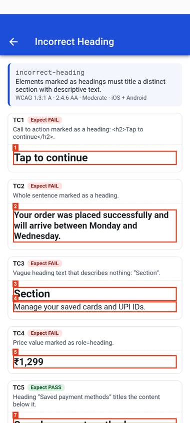
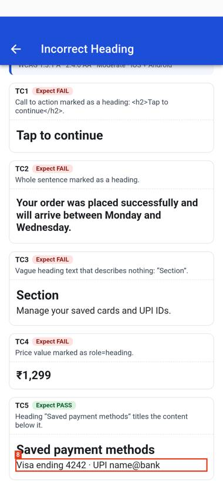
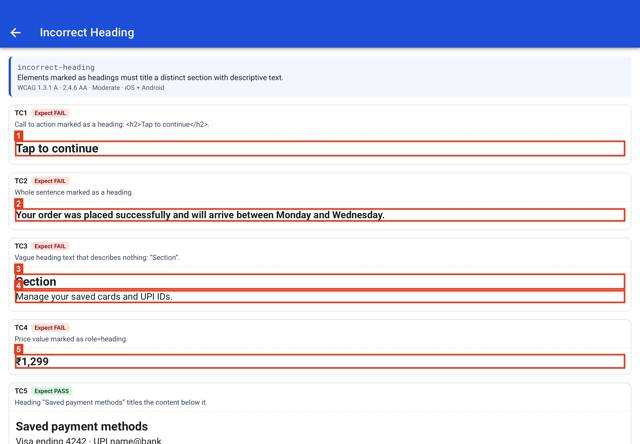
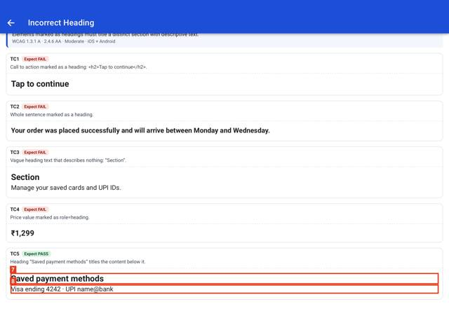
| # | TC | 1 · Real TalkBack | 2 · Real VoiceOver | 3 · Our Android capture | 4 · Our iOS capture |
|---|---|---|---|---|---|
| 1 | TC1 FAILheading | Tap to continue, heading 2 | Tap to continue, Heading level 2 | Tap to continue, heading 2 ✓class TextView | Tap to continue, Heading ≈type WebLabel |
| 2 | TC2 FAILheading | Your order was placed successfully and will arrive between Monday and Wednesday., heading 3 | CAuAd анa Your order was placed successfully and will arrive between Monday and Wednesday. | Your order was placed successfully and will arrive between Monday and Wednesday., heading 3 ✓class TextView | Your order was placed successfully and will arrive between Monday and Wednesday., Heading ≈type WebLabel |
| 3 | TC3 FAILheading | Section, heading 2 | Section, Heading level 2 | Section, heading 2 ✓class TextView | Section, Heading ≈type WebLabel |
| 4 | TC3 FAILtext | Manage your saved cards and UPI IDs. | Manage your saved cards and UPI IDs. | Manage your saved cards and UPI IDs. ✓class TextView | Manage your saved cards and UPI IDs. ✓type WebLabel |
| 5 | TC4 FAILheading | 71,299, heading 3 | ·1,299 | ₹1,299, heading 3 ≠class TextView | ₹1,299, Heading ≈type WebLabel |
| 6 | TC5 PASStext | Visa ending 4242 · UPI name@bank | not reached in the recording | Visa ending 4242 · UPI name@bank ✓class TextView | no captured node |
| 7 | TC5 PASSheading | Saved payment methods, heading 2 | Saved payment methods, Heading level 2 | Saved payment methods, heading 2 ✓class TextView | Saved payment methods, Heading ≈type WebLabel |
| 8 | TC5 PASStext | Visa ending 4242 · UPI name@bankinferred: focused too briefly to speak | Visa ending 4242 · UPI name@bank | Visa ending 4242 · UPI name@bank ✓class TextView | Visa ending 4242 · UPI name@bank ✓type WebLabel |
Only the text fields on this page (1 other elements left out).
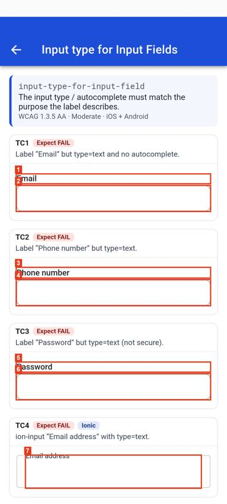
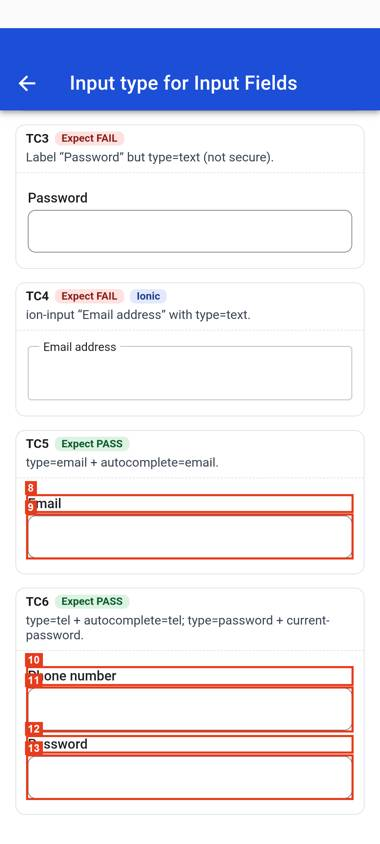
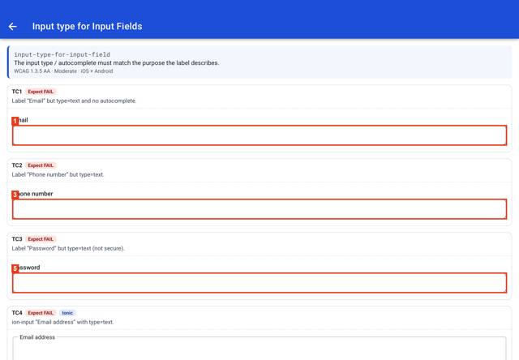
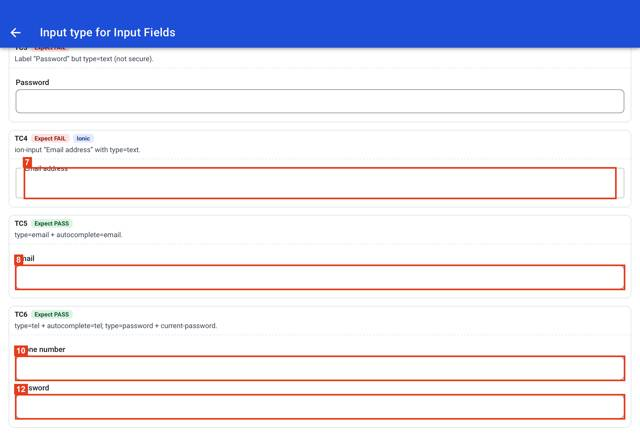
| # | TC | 1 · Real TalkBack | 2 · Real VoiceOver | 3 · Our Android capture | 4 · Our iOS capture |
|---|---|---|---|---|---|
| 1 | TC1 FAILtext field | Email, Text field | Email ✓class View | Email, Text field ✓type TextField | |
| 2 | TC1 FAILtext field | Edit box | not reached in the recording | Edit box ✓class EditText | no captured node |
| 3 | TC2 FAILtext field | Phone numberinferred: focused too briefly to speak | Phone number, Text field | Phone number ✓class View | Phone number, Text field ✓type TextField |
| 4 | TC2 FAILtext field | Edit box | not reached in the recording | Edit box ✓class EditText | no captured node |
| 5 | TC3 FAILtext field | Password | Password, Text field | Password ✓class View | Password, Text field ✓type TextField |
| 6 | TC3 FAILtext field | Edit box | not reached in the recording | Edit box ✓class EditText | no captured node |
| 7 | TC4 FAILtext field | Edit box | Email address, Text field | Edit box ✓class EditText | Email address, Text field ✓type TextField |
| 8 | TC5 PASStext field | Email, Text field | Email ✓class View | Email, Text field ✓type TextField | |
| 9 | TC5 PASStext field | Edit box | not reached in the recording | Edit box ✓class EditText | no captured node |
| 10 | TC6 PASStext field | Phone number | Phone number, Text field | Phone number ✓class View | Phone number, Text field ✓type TextField |
| 11 | TC6 PASStext field | Edıt box | not reached in the recording | Edit box ≠class EditText | no captured node |
| 12 | TC6 PASStext field | Passwordinferred: focused too briefly to speak | Password, Secure text field | Password ✓class View | Password, Text field ≈type TextField |
| 13 | TC6 PASStext field | Edit boxinferred: focused too briefly to speak | not reached in the recording | Edit box ✓class EditText | no captured node |
Only the buttons, checkboxs, text fields, links, radio buttons, switchs, tabs on this page.
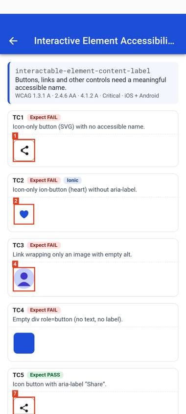
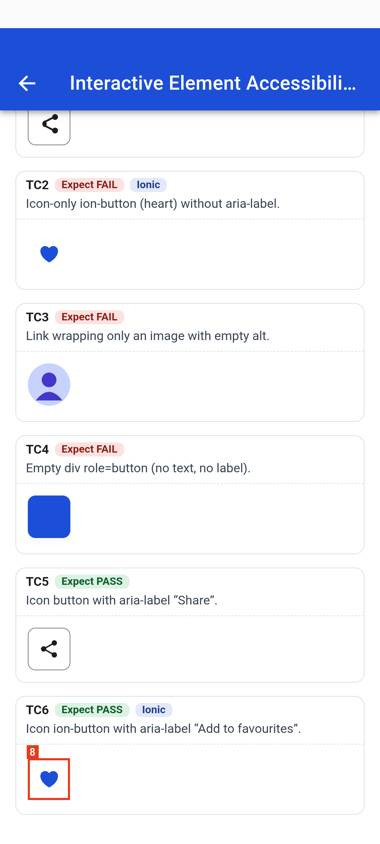
| # | TC | 1 · Real TalkBack | 2 · Real VoiceOver | 3 · Our Android capture | 4 · Our iOS capture |
|---|---|---|---|---|---|
| 1 | TC1 FAILbutton | Button | Button | Button ✓class Button | Button ✓type WebButton |
| 2 | TC2 FAILbutton | Button | Button | Button ✓class Button | Button ✓type WebButton |
| 3 | TC3 FAILlink | not reached in the recording | Link | no captured node | Link ✓type WebLink |
| 4 | TC4 FAILlink | Hash, link | not reached in the recording | Hash, link ✓class View | no captured node |
| 5 | TC4 FAILbutton | not reached in the recording | Button | no captured node | Button ✓type WebButton |
| 6 | TC5 PASSbutton | not reached in the recording | Share, Button | Share, Buttonclass Button | Share, Button ✓type WebButton |
| 7 | TC6 PASSbutton | Share, Button | not reached in the recording | Share, Button ✓class Button | no captured node |
| 8 | TC6 PASSbutton | Add to favourites, Button | Add to favourites, Button | Add to favourites, Button ✓class Button | Add to favourites, Button ✓type WebButton |
Only the buttons, checkboxs, text fields, links, radio buttons, switchs, tabs, texts on this page.
| # | TC | 1 · Real TalkBack | 2 · Real VoiceOver | 3 · Our Android capture | 4 · Our iOS capture |
|---|---|---|---|---|---|
| 1 | TC1 FAILtext | Add to cart | not reached in the recording | Add to cart ✓class TextView | no captured node |
| 2 | TC2 FAILtext | Buy now | Buy now | Buy now ✓class TextView | no captured node |
| 3 | TC3 FAILtext | Open map | Open map | Open map ✓class TextView | Open map ✓type WebTappableView |
| 4 | TC4 PASSbutton | Add to cart, Button | Add to cart, Button | Add to cart, Button ✓class Button | Add to cart, Button ✓type WebButton |
| 5 | TC5 PASSlink | Open map, link | Open map, Link | Open map, link ✓class View | Open map, Link ✓type WebLink |
Only the buttons, checkboxs, text fields, links, radio buttons, switchs, tabs, texts on this page.
| # | TC | 1 · Real TalkBack | 2 · Real VoiceOver | 3 · Our Android capture | 4 · Our iOS capture |
|---|---|---|---|---|---|
| 1 | TC1 FAILtext | Add to cart | not reached in the recording | Add to cart ✓class TextView | Add to carttype WebTappableView |
| 2 | TC2 FAILbutton | Checkout, Button | not reached in the recording | Checkout, Button ✓class Button | Checkout, Buttontype WebButton |
| 3 | TC3 FAILlink | View details, link | not reached in the recording | View details, link ✓class View | View detailstype WebTappableView |
| 4 | TC4 FAILbutton | Save address, Button | not reached in the recording | Save address, Button ✓class Button | Save address, Buttontype WebButton |
| 5 | TC5 EDGEtext | Page | not reached in the recording | Page ✓class View | no captured node |
| 6 | TC5 EDGEtext | Line 1, In pager | not reached in the recording | Line 1 ≈class TextView | Line 1type WebLabel |
| 7 | TC5 EDGEtext | Pageinferred: focused too briefly to speak | not reached in the recording | Page ✓class View | no captured node |
| 8 | TC5 EDGEtext | Line 3inferred: focused too briefly to speak | not reached in the recording | Line 3 ✓class TextView | Line 3type WebLabel |
| 9 | TC5 EDGEtext | Line 4inferred: focused too briefly to speak | not reached in the recording | Line 4 ✓class TextView | Line 4type WebLabel |
| 10 | TC5 EDGEtext | Line 5inferred: focused too briefly to speak | not reached in the recording | Line 2 ≠class TextView | Line 2type WebLabel |
| 11 | TC5 EDGEtext | Line 6inferred: focused too briefly to speak | not reached in the recording | Line 1 ≠class TextView | no captured node |
| 12 | TC5 EDGEtext | TC6, Out of pager | not reached in the recording | TC6 ≠class TextView | no captured node |
| 13 | TC6 PASSbutton | Save address, Button | not reached in the recording | Save address, Button ✓class Button | Save address, Buttontype WebButton |
| 14 | TC7 PASSbutton | Checkout, Button | not reached in the recording | Checkout, Button ✓class Button | Checkout, Buttontype WebButton |
Only the buttons, checkboxs, text fields, links, radio buttons, switchs, tabs on this page (1 other elements left out).
| # | TC | 1 · Real TalkBack | 2 · Real VoiceOver | 3 · Our Android capture | 4 · Our iOS capture |
|---|---|---|---|---|---|
| 1 | TC1 FAILbutton | Submit message, Button | Submit message, Button | Submit message, Button ✓class Button | Submit message, Button ✓type WebButton |
| 2 | TC1 FAILbutton | Send message, Buttoninferred: focused too briefly to speak | not reached in the recording | Submit message, Button ≠class Button | no captured node |
| 3 | TC2 FAILbutton | Continue, Button | Continue, Button | Continue, Button ✓class Button | Continue, Button ✓type WebButton |
| 4 | TC3 FAILbutton | Find, Button | Find, Button | Find, Button ✓class Button | Find, Button ✓type WebButton |
| 5 | TC4 EDGEbutton | Questions and answers, Button | Questions and answers, Button | Questions and answers, Button ✓class Button | Questions and answers, Button ✓type WebButton |
| 6 | TC5 PASSbutton | Send message, Button | Send message, Button | Send message, Button ✓class Button | Send message, Button ✓type WebButton |
Only the links on this page (1 other elements left out).
| # | TC | 1 · Real TalkBack | 2 · Real VoiceOver | 3 · Our Android capture | 4 · Our iOS capture |
|---|---|---|---|---|---|
| 1 | TC1 FAILlink | click here, link | click here, Link | click here, link ✓class View | click here, Link ✓type WebLink |
| 2 | TC2 FAILlink | Read more, link | Read more, Link | Read more, link ✓class View | Read more, Link ✓type WebLink |
| 3 | TC3 FAILlink | https://www.example.com/docs/terms?id=42&ref= app, link | https://www.example.com/docs/terms?id=42&ref=app, Link | https://www.example.com/docs/terms?id=42&ref=app, link ✓class View | https://www.example.com/docs/terms?id=42&ref=app, Link ✓type WebLink |
| 4 | TC4 FAILlink | divider, link | Link, Image | divider, link ✓class View | Link ≠type WebLink |
| 5 | TC5 EDGElink | Read more about pricing, link | Read more about pricing, Link | Read more about pricing, link ✓class View | Read more about pricing, Link ✓type WebLink |
| 6 | TC6 PASSlink | not reached in the recording | Read the refund policy, Link | Read the refund policy, linkclass View | Read the refund policy, Link ✓type WebLink |
Only the images on this page.
| # | TC | 1 · Real TalkBack | 2 · Real VoiceOver | 3 · Our Android capture | 4 · Our iOS capture |
|---|---|---|---|---|---|
| 1 | TC1 FAILimage | dog, Image | Image | dog, Image ✓class View | Image ✓type WebImageView |
| 2 | TC2 FAILimage | IMG_2024.png, Image | IMG_2024.png, Image | IMG_2024.png, Image ✓class View | IMG_2024.png, Image ✓type WebImageView |
| 3 | TC3 FAILimage | image | Image | image ✓class View | image, Image ≠type WebImageView |
| 4 | TC4 FAILimage | not reached in the recording | Image | no captured node | Image ✓type WebImageView |
| 5 | TC5 PASSimage | not reached in the recording | Golden retriever catching a ball, Image | Golden retriever catching a ball, Imageclass View | Golden retriever catching a ball, Image ✓type WebImageView |
Every test-case element on this page.
| # | TC | 1 · Real TalkBack | 2 · Real VoiceOver | 3 · Our Android capture | 4 · Our iOS capture |
|---|---|---|---|---|---|
| 1 | TC1 FAILtext | 3· Рaу | 3· Pay | 3 · Pay ≠class TextView | 3 · Pay ✓type WebLabel |
| 2 | TC1 FAILtext | 1 · Cart | 1 · Cart | 1 · Cart ✓class TextView | 1 · Cart ✓type WebLabel |
| 3 | TC1 FAILtext | 2· Address | 2 · Address | 2 · Address ✓class TextView | 2 · Address ✓type WebLabel |
| 4 | TC2 FAILtext | Total | Total | Total ✓class TextView | Total ✓type WebLabel |
| 5 | TC2 FAILtext | ·2,450 | ₹2,450 | ₹2,450 ≈class TextView | ₹2,450 ✓type WebLabel |
| 6 | TC3 FAILtext | Name | Name | Name ✓class TextView | Name ✓type WebLabel |
| 7 | TC3 FAILtext | Email ✓class TextView | Email ✓type WebLabel | ||
| 8 | TC3 FAILtext | City | City | City ✓class TextView | City ✓type WebLabel |
| 9 | TC3 FAILtext | Zip | Zip | Zip ✓class TextView | Zip ✓type WebLabel |
| 10 | TC4 FAILbutton | Buy, Button | Buy, Button | Buy, Button ✓class Button | Buy, Button ✓type WebButton |
| 11 | TC4 FAILtext | Wireless earbuds | Wireless earbuds | Wireless earbuds ✓class TextView | Wireless earbuds ✓type WebLabel |
| 12 | TC4 FAILtext | 999 | ₴3,999 | ₹3,999 ≈class TextView | ₹3,999 ≈type WebLabel |
| 13 | TC5 PASStext | 1 · Cart | 1· Cart | 1 · Cart ✓class TextView | 1 · Cart ✓type WebLabel |
| 14 | TC5 PASStext | 2· Address | 2 · Address | 2 · Address ✓class TextView | 2 · Address ✓type WebLabel |
| 15 | TC5 PASStext | 3 Pay | 3 · Pay | 3 · Pay ✓class TextView | 3 · Pay ✓type WebLabel |
Every test-case element on this page.
| # | TC | 1 · Real TalkBack | 2 · Real VoiceOver | 3 · Our Android capture | 4 · Our iOS capture |
|---|---|---|---|---|---|
| 1 | TC1 FAILbutton | Submit, Button | not reached in the recording | Submit, Button ✓class Button | Submit, Buttontype WebButton |
| 2 | TC1 FAILtext field | Nameinferred: focused too briefly to speak | Name, Text field | Name ✓class View | Name ≈type WebLabel |
| 3 | TC1 FAILtext field | Edit box | not reached in the recording | Edit box ✓class EditText | Name, Text fieldtype TextField |
| 4 | TC2 FAILtext | ₹899inferred: focused too briefly to speak | ·899 | ₹899 ✓class TextView | ₹899 ≈type WebLabel |
| 5 | TC2 FAILtext | Running shoes | Running shoes | Running shoes ✓class TextView | Running shoes ✓type WebLabel |
| 6 | TC2 FAILtext | Price for the item below 1 | Price for the item below J | Price for the item below ↓ ≈class TextView | Price for the item below ↓ ≈type WebLabel |
| 7 | TC2 FAILtext | Water bottle | Water bottle | Water bottle ✓class TextView | Water bottle ✓type WebLabel |
| 8 | TC3 FAILtext | Step 3inferred: focused too briefly to speak | not reached in the recording | Step 3 ✓class TextView | Step 3type WebLabel |
| 9 | TC3 FAILtext | Step 1inferred: focused too briefly to speak | not reached in the recording | Step 1 ✓class TextView | Step 1type WebLabel |
| 10 | TC3 FAILtext | Step 2inferred: focused too briefly to speak | not reached in the recording | Step 2 ✓class TextView | Step 2type WebLabel |
| 11 | TC4 PASStext | Contact | Contact | Contact ✓class TextView | Contact ✓type WebLabel |
| 12 | TC4 PASStext field | Email, Text field | Email ✓class View | Email ≈type WebLabel | |
| 13 | TC4 PASStext field | Edit box | not reached in the recording | Edit box ✓class EditText | Email, Text fieldtype TextField |
| 14 | TC4 PASSbutton | not reached in the recording | Send, Button | Send, Buttonclass Button | Send, Button ✓type WebButton |
Only the headings, texts on this page.
| # | TC | 1 · Real TalkBack | 2 · Real VoiceOver | 3 · Our Android capture | 4 · Our iOS capture |
|---|---|---|---|---|---|
| 1 | TC1 FAILtext | Payment details | Payment details | Payment details ✓class TextView | Payment details ✓type WebLabel |
| 2 | TC1 FAILtext | Card ending 4242 · Expires 08/29 | Card ending. 4242 · Expires 08/29 | Card ending 4242 · Expires 08/29 ✓class TextView | Card ending 4242 · Expires 08/29 ✓type WebLabel |
| 3 | TC2 FAILtext | Recent orders | Recent orders, List start | Recent orders ✓class View | Recent orders ≈type WebLabel |
| 4 | TC2 FAILtext | Order #1043 | Order #1043, 1 of 1, List end | Order #1043 ✓class View | Order #1043 ≈type WebLabel |
| 5 | TC3 FAILtext | Shipping | Shipping | Shipping ✓class TextView | Shipping ✓type WebLabel |
| 6 | TC3 FAILtext | Standard · 3-5 days | Standard · 3-5 days | Standard · 3–5 days ✓class TextView | Standard · 3–5 days ✓type WebLabel |
| 7 | TC4 PASSheading | Payment details, heading 2 | Payment details, Heading, level 2 | Payment details, heading 2 ✓class TextView | Payment details, Heading ≈type WebLabel |
| 8 | TC4 PASStext | Card ending 4242 | Card ending. 4242 | Card ending 4242 ✓class TextView | Card ending 4242 ✓type WebLabel |
| 9 | TC5 PASSheading | Shipping, heading 2 | Shipping, Heading level 2 | Shipping, heading 2 ✓class TextView | Shipping, Heading ≈type WebLabel |
| 10 | TC5 PASStext | Standard · 3-5 days | Standard · 3-5 days | Standard · 3–5 days ✓class TextView | Standard · 3–5 days ✓type WebLabel |
| 11 | TC5 PASStext | Listinferred: focused too briefly to speak | not reached in the recording | List ✓class ListView | no captured node |
Only the buttons, checkboxs, text fields, links, radio buttons, switchs, tabs, texts on this page.
| # | TC | 1 · Real TalkBack | 2 · Real VoiceOver | 3 · Our Android capture | 4 · Our iOS capture |
|---|---|---|---|---|---|
| 1 | TC1 FAILswitch | Tap to toggle | not reached in the recording | Tap to toggle ✓class View | no captured node |
| 2 | TC2 FAILtext | View order history | View order history. | View order history ✓class TextView | View order history ✓type WebTappableView |
| 3 | TC3 FAILtext | Day | Day. | Day ✓class TextView | Day ✓type WebTappableView |
| 4 | TC3 FAILtext | Week | Week | Week ✓class TextView | Week ✓type WebTappableView |
| 5 | TC3 FAILtext | Month | Month | Month ✓class TextView | Month ✓type WebTappableView |
| 6 | TC4 PASSswitch | On, Auto-play, Switch | Auto-play, Switch button, on | ticked, on, Auto-play, Switch ≈class Switch | Selected, Auto-play, Switch button ≈type WebSwitch |
| 7 | TC5 PASStab | selected, Day, tab, 1 of 2, In tab list, 2 items | selected, Day, Tab | selected, Day, tab ≈class View | Selected, Day, Button, Tab ≈type WebTabButton |
| 8 | TC5 PASStab | Week, tab, 2 of 2 | Week, Tab | Week, tab ≈class View | Week, Button, Tab ≈type WebTabButton |
Every test-case element on this page.
| # | TC | 1 · Real TalkBack | 2 · Real VoiceOver | 3 · Our Android capture | 4 · Our iOS capture |
|---|---|---|---|---|---|
| 1 | TC1 FAILtext field | Edit box | Coupon code, Text field | Edit box ✓class EditText | Coupon code, Text field ✓type TextField |
| 2 | TC2 FAILbutton | Close, Button | Close, Button | Close, Button ✓class Button | Close, Button ✓type WebButton |
| 3 | TC3 FAILcheckbox | Save card, Tick box | Save card, Checkbox, unticked | Save card ≈class View | Save card ≈type WebLabel |
| 4 | TC3 FAILcheckbox | Save cardinferred: focused too briefly to speak | not reached in the recording | Save card, Tick box ≈class CheckBox | Save card, Checkboxtype WebCheckBox |
| 5 | TC4 FAILradio button | Ticked. In group, option 1 of 2, capital S, Radio button, In Size | S, Radio button, ticked, 1 of 2 | Ticked. In group, option 1 of 2, capital S, Radio button ≈class RadioButton | Selected, S, Radio button ≈type WebRadioButton |
| 6 | TC4 FAILradio button | Not ticked. In group, option 2 of 2, capital M, Radio button | M, Radio button, unticked, 2 of 2 | Not ticked. In group, option 2 of 2, capital M, Radio button ✓class RadioButton | M, Radio button ≈type WebRadioButton |
| 7 | TC4 FAILtext | TC5, Out of Size | not reached in the recording | TC5 ≠class TextView | no captured node |
| 8 | TC4 FAILtext | Input border #767676 (4.5:1) and icon #5f6368.inferred: focused too briefly to speak | not reached in the recording | Input border #767676 (4.5:1) and icon #5f6368. ✓class TextView | no captured node |
| 9 | TC5 PASStext field | not reached in the recording | Coupon code, Text field | no captured node | Coupon code, Text field ✓type TextField |
| 10 | TC5 PASSbutton | not reached in the recording | Close, Button | Close, Buttonclass Button | Close, Button ✓type WebButton |
Only the buttons, checkboxs, text fields, links, radio buttons, switchs, tabs on this page.
| # | TC | 1 · Real TalkBack | 2 · Real VoiceOver | 3 · Our Android capture | 4 · Our iOS capture |
|---|---|---|---|---|---|
| 1 | TC1 FAILlink | Details, link | Details, Link | Details, link ✓class View | Details, Link ✓type WebLink |
| 2 | TC1 FAILbutton | Dismiss, Button | Dismiss, Button | Dismiss, Button ✓class Button | Dismiss, Button ✓type WebButton |
| 3 | TC2 FAILbutton | Cancel, Button | Cancel, Button | Cancel, Button ✓class Button | Cancel, Button ✓type WebButton |
| 4 | TC2 FAILbutton | Confirm, Button | Confirm, Button | Confirm, Button ✓class Button | Confirm, Button ✓type WebButton |
| 5 | TC3 FAILbutton | Buy, Button | Buy. | Buy, Button ✓class Button | Buy, Button ≈type WebButton |
| 6 | TC3 FAILbutton | Add, Button | Add, Button | Add, Button ✓class Button | Add, Button ✓type WebButton |
| 7 | TC4 EDGEbutton | · Open product, Button | Open product, Button | Open product, Button ✓class Button | Open product, Button ✓type WebButton |
| 8 | TC5 PASSbutton | Cancei, Button | Cancel, Button | Cancel, Button ≠class Button | Cancel, Button ✓type WebButton |
| 9 | TC5 PASSbutton | Confirm, Button | Confirm, Button | Confirm, Button ✓class Button | Confirm, Button ✓type WebButton |
| 10 | TC5 PASSlink | TC1 Expect FAIL Close "x" button overlaps a "Details" link. | not reached in the recording | TC1, Expect FAIL, Close "×" button overlaps a "Details" link. ≈class View | no captured node |
Every test-case element on this page.
| # | TC | 1 · Real TalkBack | 2 · Real VoiceOver | 3 · Our Android capture | 4 · Our iOS capture |
|---|---|---|---|---|---|
| 1 | TC1 FAILtext | Terms and conditions apply to this offer. | Terms and conditions apply to this offer. | Terms and conditions apply to this offer. ✓class TextView | Terms and conditions apply to this offer. ✓type WebLabel |
| 2 | TC2 FAILtext | Terms and conditions apply to this offer. | Terms and conditions apply to this offer. | Terms and conditions apply to this offer. ✓class TextView | Terms and conditions apply to this offer. ✓type WebLabel |
| 3 | TC3 EDGEtext | Eage case | not reached in the recording | main, readable-text-size, Android: body text should be at least 14 sp., WCAG Best practice (1.4.4) · Moderate · Android only, TC1, Expect FAIL, 9px caption., Terms and conditions apply to this offer., TC2, Expect FAIL, 11px body text., Terms and conditions apply to this offer., TC3, Edge case, 13.5px, just under the 14 threshold., Terms and conditions apply to this offer., TC4, Expect PASS, 14px (the threshold)., Terms and conditions apply to this offer., TC5, Expect PASS, 16px body text., Terms and conditions apply to this offer. ≠class View | no captured node |
| 4 | TC3 EDGEtext | Terms and conditions apply to this offer. | Terms and conditions apply to this offer. | Terms and conditions apply to this offer. ✓class TextView | Terms and conditions apply to this offer. ✓type WebLabel |
| 5 | TC4 PASStext | Terms and conditions apply to this offer. | not reached in the recording | Terms and conditions apply to this offer. ✓class TextView | Terms and conditions apply to this offer.type WebLabel |
| 6 | TC5 PASStext | Terms and conditions apply to this offer. | not reached in the recording | Terms and conditions apply to this offer. ✓class TextView | Terms and conditions apply to this offer.type WebLabel |
Every test-case element on this page.
| # | TC | 1 · Real TalkBack | 2 · Real VoiceOver | 3 · Our Android capture | 4 · Our iOS capture |
|---|---|---|---|---|---|
| 1 | TC1 FAILtext | Your parcel has left our warehouse and is on its way to the local delivery hub near you. | Your parcel has left our warehouse and is on its way to the local delivery hub near you. | Your parcel has left our warehouse and is on its way to the local delivery hub near you. ✓class TextView | Your parcel has left our warehouse and is on its way to the local delivery hub near you. ✓type WebLabel |
| 2 | TC2 FAILtext | First paragraph about delivery windows. | First paragraph about delivery windows. | First paragraph about delivery windows. ✓class TextView | First paragraph about delivery windows. ✓type WebLabel |
| 3 | TC2 FAILtext | Second paragraph about returns. | Second paragraph about returns. | Second paragraph about returns. ✓class TextView | Second paragraph about returns. ✓type WebLabel |
| 4 | TC3 FAILtext | Your parcel is on its way to the local delivery hub. | Your parcel is on its way to the local delivery hub. | Your parcel is on its way to the local delivery hub. ✓class TextView | Your parcel is on its way to the local delivery hub. ✓type WebLabel |
| 5 | TC4 PASStext | Your parcel has left our warehouse and is on its way to the local delivery hub near you. | Your parcel has left our warehouse and is on its way to the local delivery hub near you. | Your parcel has left our warehouse and is on its way to the local delivery hub near you. ✓class TextView | Your parcel has left our warehouse and is on its way to the local delivery hub near you. ✓type WebLabel |
| 6 | TC4 PASStext | Returns are free for 30 days. | Returns are free for 30 days. | Returns are free for 30 days. ✓class TextView | Returns are free for 30 days. ✓type WebLabel |
Every test-case element on this page.
| # | TC | 1 · Real TalkBack | 2 · Real VoiceOver | 3 · Our Android capture | 4 · Our iOS capture |
|---|---|---|---|---|---|
| 1 | TC1 FAILtext | Fixed-width promo card: this content is 600px wide and cut off on a phone. | Fixed-width promo card: this content is 600px wide and cut off on a phone. | Fixed-width promo card: this content is 600px wide and cut off on a phone. ✓class View | Fixed-width promo card: this content is 600px wide and cut off on a phone. ✓type WebLabel |
| 2 | TC2 FAILtext | Line one of the message. Line two of the message. Line three is hidden. | Line one of the message. Line two of the message. Line three is hidden. Line four is hidden. | Line one of the message. Line two of the message. Line three is hidden. Line four is hidden. ≈class TextView | Line one of the message. Line two of the message. Line three is hidden. Line four is hidden. ✓type WebLabel |
| 3 | TC3 PASStext | This card is fluid and wraps to any width. | This card is fluid and wraps to any width. | This card is fluid and wraps to any width. ✓class TextView | This card is fluid and wraps to any width. ✓type WebLabel |
| 4 | TC4 EDGEtext | ion-content is the page's scroll container. | ion-content is the page's scroll container. | ion-content is the page's scroll container. ✓class TextView | ion-content is the page's scroll container. ✓type WebLabel |
Only the buttons, checkboxs, text fields, images, links, radio buttons, switchs, tabs, texts on this page.
| # | TC | 1 · Real TalkBack | 2 · Real VoiceOver | 3 · Our Android capture | 4 · Our iOS capture |
|---|---|---|---|---|---|
| 1 | TC4 EDGElink | (invisible link here) | not reached in the recording | (invisible link here) ✓class View | no captured node |
| 2 | TC4 EDGElink | not reached in the recording | Skip to content, Link | Skip to content, linkclass View | Skip to content, Link ✓type WebLink |
| 3 | TC5 PASSbutton | Apply coupon, Button | Apply coupon, Button | Apply coupon, Button ✓class Button | Apply coupon, Button ✓type WebButton |
Only the buttons, checkboxs, text fields, links, radio buttons, switchs, tabs on this page.
| # | TC | 1 · Real TalkBack | 2 · Real VoiceOver | 3 · Our Android capture | 4 · Our iOS capture |
|---|---|---|---|---|---|
| 1 | TC1 FAILbutton | * Favourite, Button | * Favourite, Button | ★ Favourite, Button ✓class Button | ★ Favourite, Button ✓type WebButton |
| 2 | TC2 FAILbutton | Hot deals, Button | 🔥 Hot deals, Button | 🔥 Hot deals, Button ✓class Button | 🔥 Hot deals, Button ✓type WebButton |
| 3 | TC3 FAILbutton | Next -, Button | Next →, Button | Next →, Button ✓class Button | Next →, Button ✓type WebButton |
| 4 | TC4 FAILbutton | Tick, Button | Button | Tick, Button ✓class Button | ✓, Button ✓type WebButton |
| 5 | TC5 EDGEbutton | Pay R499, Button | Pay ₹499, Button | Pay ₹499, Button ≈class Button | Pay ₹499, Button ✓type WebButton |
| 6 | TC6 PASSbutton | Favourite, Button | Favourite, Button | Favourite, Button ✓class Button | Favourite, Button ✓type WebButton |
Only the buttons, checkboxs, text fields, links, radio buttons, switchs, tabs on this page.
| # | TC | 1 · Real TalkBack | 2 · Real VoiceOver | 3 · Our Android capture | 4 · Our iOS capture |
|---|---|---|---|---|---|
| 1 | TC1 FAILbutton | btn_submit_01, Button | btn_submit_01, Button | btn_submit_01, Button ✓class Button | btn_submit_01, Button ✓type WebButton |
| 2 | TC2 FAILbutton | ic_settings_24dp, Button | ic_settings_24dp, Button | ic_settings_24dp, Button ✓class Button | ic_settings_24dp, Button ✓type WebButton |
| 3 | TC3 FAILbutton | not reached in the recording | Button | no captured node | Button ✓type WebButton |
| 4 | TC4 PASSbutton | Settings, Button | Settings, Button | Settings, Button ✓class Button | Settings, Button ✓type WebButton |
Every test-case element on this page.
| # | TC | 1 · Real TalkBack | 2 · Real VoiceOver | 3 · Our Android capture | 4 · Our iOS capture |
|---|---|---|---|---|---|
| 1 | TC1 FAILbutton | not reached in the recording | not reached in the recording | Lock this screen, Buttonclass Button | Lock this screen, Buttontype WebButton |
| 2 | TC1 FAILbutton | not reached in the recording | not reached in the recording | Release, Buttonclass Button | Release, Buttontype WebButton |
| 3 | TC1 FAILtext | not reached in the recording | not reached in the recording | Orientation: unlockedclass TextView | Orientation: unlockedtype WebLabel |
| 4 | TC2 PASStext | not reached in the recording | not reached in the recording | Content reflows in landscape.class TextView | Content reflows in landscape.type WebLabel |
Only the switchs on this page.
| # | TC | 1 · Real TalkBack | 2 · Real VoiceOver | 3 · Our Android capture | 4 · Our iOS capture |
|---|---|---|---|---|---|
| 1 | TC1 FAILswitch | Off, Switch | Switch button, off | off, Switch ✓class Switch | Switch button ≠type WebSwitch |
| 2 | TC2 FAILswitch | Off, Switch | Switch button, off | off, Switch ✓class Switch | Switch button ≠type WebSwitch |
| 3 | TC3 FAILswitch | Off, Switch | Switch button, off | off, Switch ✓class Switch | Switch button ≠type WebSwitch |
| 4 | TC4 EDGEswitch | Off, Toggle, Switch | Toggle, Switch button, off | Toggle, Switch ≈class Switch | Toggle, Switch button ≈type WebSwitch |
| 5 | TC5 PASSswitch | not reached in the recording | Wi-Fi, Switch button, on | ticked, Wi-Fi, Switchclass Switch | Selected, Wi-Fi, Switch button ≈type WebSwitch |
| 6 | TC6 PASSswitch | On, Bluetooth, Switch | Bluetooth, Switch button, on | ticked, on, Bluetooth, Switch ≈class Switch | Selected, Bluetooth, Switch button ≈type WebSwitch |
Every test-case element on this page.
| # | TC | 1 · Real TalkBack | 2 · Real VoiceOver | 3 · Our Android capture | 4 · Our iOS capture |
|---|---|---|---|---|---|
| 1 | TC1 FAILtext | #999 on #fff, 14px (2.8:1)., In pager | not reached in the recording | #999 on #fff, 14px (2.8:1). ≈class TextView | no captured node |
| 2 | TC1 FAILtext | Delivery by Tuesday | not reached in the recording | Delivery by Tuesday ✓class TextView | Delivery by Tuesdaytype WebLabel |
| 3 | TC2 FAILbutton | Add to cart, Button | not reached in the recording | Add to cart, Button ✓class Button | Add to cart, Buttontype WebButton |
| 4 | TC3 FAILtext field | Enter PIN code, Edit box | not reached in the recording | Enter PIN code, Edit box ✓class EditText | PIN code, Text fieldtype TextField |
| 5 | TC4 FAILtext | Explore the hills | not reached in the recording | Explore the hills ✓class TextView | Explore the hillstype WebLabel |
| 6 | TC5 EDGEtext | Order confirmed | not reached in the recording | Order confirmed ✓class TextView | Order confirmedtype WebLabel |
| 7 | TC6 EDGEbutton | Place order, Button, disabled | not reached in the recording | Place order, Button, disabled ✓class Button | Place order, Buttontype WebButton |
| 8 | TC7 PASStext | Delivery by Tuesday | not reached in the recording | Delivery by Tuesday ✓class TextView | Delivery by Tuesdaytype WebLabel |
Every test-case element on this page.
| # | TC | 1 · Real TalkBack | 2 · Real VoiceOver | 3 · Our Android capture | 4 · Our iOS capture |
|---|---|---|---|---|---|
| 1 | TC1 FAILtext | Organic cold-pressed extra virgin olive oil, 1 litre glass bottle | Organic cold-pressed extra virgin olive oil,, 1 litre glass bottle | Organic cold-pressed extra virgin olive oil, 1 litre glass bottle ✓class TextView | Organic cold-pressed extra virgin olive oil, 1 litre glass bottle ✓type WebLabel |
| 2 | TC2 FAILtext | Lightweight breathable running shoes with responsive cushioning, a reinforced heel and a recycied knit upper for everyday training. | Lightweight breathable running shoes with responsive cushioning, a reinforced heel and a recycled knit upper for everyday trainir | Lightweight breathable running shoes with responsive cushioning, a reinforced heel and a recycled knit upper for everyday training. ≈class TextView | Lightweight breathable running shoes with responsive cushioning, a reinforced heel and a recycled knit upper for everyday training. ≈type WebLabel |
| 3 | TC3 FAILtext | Refunds are processed to the original payment method within 5–7 business days after pickup.inferred: focused too briefly to speak | Refunds are processed to the original payment method within 5-7 business days after pickup. | Refunds are processed to the original payment method within 5–7 business days after pickup. ✓class TextView | Refunds are processed to the original payment method within 5–7 business days after pickup. ✓type WebLabel |
| 4 | TC4 FAILheading | Organic cold-pressed extra virgin olive oil, 1 litre glass bottle, heading З | Organic cold-pressed extra virgin olive oil, 1 litre glass bottle, Heading level 3, List start | Organic cold-pressed extra virgin olive oil, 1 litre glass bottle, heading 3 ≈class View | Organic cold-pressed extra virgin olive oil, 1 litre glass bottle, Heading ≈type WebLabel |
| 5 | TC5 PASStext | Organic cold-pressed extra virgin olive oil, 1 litre glass bottle | Organic cold-pressed extra virgin olive oil, 1 litre glass bottle, List start, 1 of 1 | Organic cold-pressed extra virgin olive oil, 1 litre glass bottle ✓class View | Organic cold-pressed extra virgin olive oil, 1 litre glass bottle ≈type WebLabel |
| 6 | TC6 PASStext | Organic cold-pressed extra virgin olive oil, 1 litre glass bottle | Organic cold-pressed extra virgin olive oil, 1 litre glass bottle | Organic cold-pressed extra virgin olive oil, 1 litre glass bottle ✓class TextView | Organic cold-pressed extra virgin olive oil, 1 litre glass bottle ✓type WebLabel |
Only the buttons, checkboxs, text fields, links, radio buttons, switchs, tabs on this page (5 other elements left out).
| # | TC | 1 · Real TalkBack | 2 · Real VoiceOver | 3 · Our Android capture | 4 · Our iOS capture |
|---|---|---|---|---|---|
| 1 | TC1 FAILbutton | Like, Button | not reached in the recording | Like, Button ✓class Button | Like, Buttontype WebButton |
| 2 | TC2 FAILbutton | Remove, Button | Remove, Button | Remove, Button ✓class Button | Remove, Button ✓type WebButton |
| 3 | TC3 FAILbutton | not reached in the recording | Apply, Button | Apply, Buttonclass Button | Apply, Button ✓type WebButton |
| 4 | TC4 FAILbutton | FOLLOW, Button | FOLLOW, Button | FOLLOW, Button ✓class Button | Follow, Button ✓type WebButton |
| 5 | TC4 FAILlink | terms, link | not reached in the recording | terms, link ✓class View | no captured node |
| 6 | TC5 EDGElink | not reached in the recording | terms, Link | terms, linkclass View | terms, Link ✓type WebLink |
| 7 | TC6 PASSbutton | Add, Button | Add, Button | Add, Button ✓class Button | Add, Button ✓type WebButton |
| 8 | TC7 PASSbutton | Close, Button | Close, Button | Close, Button ✓class Button | Close, Button ✓type WebButton |
Only the buttons, checkboxs, text fields, links, radio buttons, switchs, tabs on this page (2 other elements left out).
| # | TC | 1 · Real TalkBack | 2 · Real VoiceOver | 3 · Our Android capture | 4 · Our iOS capture |
|---|---|---|---|---|---|
| 1 | TC1 FAILbutton | Rate 4 stars, Button | Rate 4 stars, Button | Rate 4 stars, Button ✓class Button | Rate 4 stars, Button ✓type WebButton |
| 2 | TC1 FAILbutton | not reached in the recording | not reached in the recording | Rate 1 stars, Buttonclass Button | Rate 1 stars, Buttontype WebButton |
| 3 | TC1 FAILbutton | not reached in the recording | not reached in the recording | Rate 2 stars, Buttonclass Button | Rate 2 stars, Buttontype WebButton |
| 4 | TC1 FAILbutton | not reached in the recording | not reached in the recording | Rate 3 stars, Buttonclass Button | Rate 3 stars, Buttontype WebButton |
| 5 | TC2 FAILbutton | Decrease, Button | Decrease, Button | Decrease, Button ✓class Button | Decrease, Button ✓type WebButton |
| 6 | TC2 FAILbutton | Increase, Button | Increase, Button | Increase, Button ✓class Button | Increase, Button ✓type WebButton |
| 7 | TC3 PASSbutton | Option 3, Button | Option 3, Button | Option 3, Button ✓class Button | Option 3, Button ✓type WebButton |
| 8 | TC3 PASSbutton | not reached in the recording | not reached in the recording | Option 1, Buttonclass Button | Option 1, Buttontype WebButton |
| 9 | TC3 PASSbutton | not reached in the recording | not reached in the recording | Option 2, Buttonclass Button | Option 2, Buttontype WebButton |
| 10 | TC4 PASSbutton | Bold, Button | Bold, Button | Bold, Button ✓class Button | Bold, Button ✓type WebButton |
| 11 | TC4 PASSbutton | Italic, Button | Italic, Button | Italic, Button ✓class Button | Italic, Button ✓type WebButton |
| 12 | TC5 EDGElink | Help, link | Help, Link | Help, link ✓class View | Help, Link ✓type WebLink |
| 13 | TC5 EDGElink | Privacy, link | Privacy, Link | Privacy, link ✓class View | Privacy, Link ✓type WebLink |
| 14 | TC5 EDGElink | Terms, link | Terms, Link | Terms, link ✓class View | Terms, Link ✓type WebLink |
Only the buttons, checkboxs, text fields, links, radio buttons, switchs, tabs on this page.
| # | TC | 1 · Real TalkBack | 2 · Real VoiceOver | 3 · Our Android capture | 4 · Our iOS capture |
|---|---|---|---|---|---|
| 1 | TC1 FAILtext field | Card number, Edit boxinferred: focused too briefly to speak | Card number, Card number, Text field | Card number, Edit box ✓class EditText | Card number, Text field ≈type TextField |
| 2 | TC1 FAILtext field | MM/YY, Edit boxinferred: focused too briefly to speak | Expiry, MM/YY, Text field | MM/YY, Edit box ✓class EditText | Expiry, Text field ≈type TextField |
| 3 | TC1 FAILtext field | CVV, Edit boxinferred: focused too briefly to speak | CVV, CVV, Text field | CVV, Edit box ✓class EditText | CVV, Text field ≈type TextField |
| 4 | TC1 FAILbutton | Continue, Buttoninferred: focused too briefly to speak | Continue, Button | Continue, Button ✓class Button | Continue, Button ✓type WebButton |
| 5 | TC2 FAILbutton | Option A, Button | Option A, Button | Option A, Button ✓class Button | Option A, Button ✓type WebButton |
| 6 | TC2 FAILbutton | Option B, Buttoninferred: focused too briefly to speak | not reached in the recording | Option B, Button ✓class Button | Option B, Buttontype WebButton |
| 7 | TC2 FAILbutton | Done, Button | Done, Button | Done, Button ✓class Button | Done, Button ✓type WebButton |
| 8 | TC3 EDGEbutton | Close, Button | Close, Button | Close, Button ✓class Button | Close, Button ✓type WebButton |
| 9 | TC3 EDGEbutton | Remove item? | Remove, Button | Remove item? ✓class AlertDialog | Remove, Button ✓type WebButton |
| 10 | TC4 PASStext field | not reached in the recording | not reached in the recording | Name, Edit boxclass EditText | Name, Text fieldtype TextField |
| 11 | TC4 PASStext field | not reached in the recording | not reached in the recording | Email, Edit boxclass EditText | Email, Text fieldtype TextField |
| 12 | TC4 PASSbutton | not reached in the recording | Continue | Continue, Buttonclass Button | Continue, Button ≈type WebButton |
Every test-case element on this page.
| # | TC | 1 · Real TalkBack | 2 · Real VoiceOver | 3 · Our Android capture | 4 · Our iOS capture |
|---|---|---|---|---|---|
| 1 | TC1 FAILtext | not reached in the recording | not reached in the recording | no captured node | Order history gridtype WebTappableView |
| 2 | TC1 FAILtext | not reached in the recording | not reached in the recording | no captured node | no captured node |
| 3 | TC1 FAILtext | not reached in the recording | not reached in the recording | no captured node | no captured node |
| 4 | TC1 FAILtext | not reached in the recording | not reached in the recording | no captured node | no captured node |
| 5 | TC1 FAILtext | not reached in the recording | not reached in the recording | no captured node | no captured node |
| 6 | TC1 FAILtext | not reached in the recording | not reached in the recording | no captured node | no captured node |
| 7 | TC1 FAILtext | not reached in the recording | not reached in the recording | no captured node | no captured node |
| 8 | TC1 FAILtext | not reached in the recording | not reached in the recording | no captured node | no captured node |
| 9 | TC1 FAILtext | not reached in the recording | not reached in the recording | no captured node | no captured node |
| 10 | TC1 FAILtext | not reached in the recording | not reached in the recording | no captured node | no captured node |
| 11 | TC1 FAILtext | not reached in the recording | not reached in the recording | no captured node | no captured node |
| 12 | TC1 FAILtext | not reached in the recording | not reached in the recording | no captured node | no captured node |
| 13 | TC1 FAILtext | not reached in the recording | not reached in the recording | no captured node | no captured node |
| 14 | TC2 FAILtext | not reached in the recording | This paragraph is laid out at 900px, so reading it needs horizontal scrolling on every line while the page also scrolls vertically. | Pageclass View | This paragraph is laid out at 900px, so reading it needs horizontal scrolling on every line while the page also scrolls vertically. ✓type WebLabel |
| 15 | TC3 EDGEtext | not reached in the recording | Plan | Planclass View | Plan ✓type WebLabel |
| 16 | TC3 EDGEtext | not reached in the recording | Jan | Janclass View | Jan ✓type WebLabel |
| 17 | TC3 EDGEtext | not reached in the recording | Feb | Febclass View | Feb ✓type WebLabel |
| 18 | TC3 EDGEtext | not reached in the recording | Mar | Marclass View | Mar ✓type WebLabel |
| 19 | TC3 EDGEtext | not reached in the recording | Apr | Aprclass View | Apr ✓type WebLabel |
| 20 | TC3 EDGEtext | not reached in the recording | May. | Mayclass View | May ✓type WebLabel |
| 21 | TC3 EDGEtext | not reached in the recording | Jun | Junclass View | Jun ✓type WebLabel |
| 22 | TC3 EDGEtext | not reached in the recording | Basic | Basicclass View | Basic ✓type WebLabel |
| 23 | TC3 EDGEtext | not reached in the recording | not reached in the recording | 9class View | 9type WebLabel |
| 24 | TC3 EDGEtext | not reached in the recording | not reached in the recording | 9class View | 9type WebLabel |
| 25 | TC3 EDGEtext | not reached in the recording | not reached in the recording | 9class View | 9type WebLabel |
| 26 | TC3 EDGEtext | not reached in the recording | not reached in the recording | 9class View | 9type WebLabel |
| 27 | TC3 EDGEtext | not reached in the recording | not reached in the recording | 9class View | 9type WebLabel |
| 28 | TC3 EDGEtext | not reached in the recording | not reached in the recording | 9class View | 9type WebLabel |
| 29 | TC3 EDGEtext | not reached in the recording | not reached in the recording | no captured node | no captured node |
| 30 | TC3 EDGEtext | not reached in the recording | not reached in the recording | no captured node | no captured node |
| 31 | TC3 EDGEtext | not reached in the recording | not reached in the recording | no captured node | no captured node |
| 32 | TC3 EDGEtext | not reached in the recording | not reached in the recording | no captured node | no captured node |
| 33 | TC3 EDGEtext | not reached in the recording | not reached in the recording | no captured node | no captured node |
| 34 | TC3 EDGEtext | not reached in the recording | not reached in the recording | no captured node | no captured node |
| 35 | TC4 PASStext | not reached in the recording | Fruits | FruitsDairyBakerySnacksDrinks, Pageclass TextView | Fruits ✓type WebLabel |
| 36 | TC4 PASStext | not reached in the recording | Dairy. | FruitsDairyBakerySnacksDrinks, Pageclass TextView | Dairy ✓type WebLabel |
| 37 | TC4 PASStext | not reached in the recording | Bakery. | FruitsDairyBakerySnacksDrinks, Pageclass TextView | Bakery ✓type WebLabel |
| 38 | TC4 PASStext | not reached in the recording | Snacks | FruitsDairyBakerySnacksDrinks, Pageclass TextView | Snacks ✓type WebLabel |
| 39 | TC4 PASStext | not reached in the recording | Drinks | FruitsDairyBakerySnacksDrinks, Pageclass TextView | Drinks ✓type WebLabel |